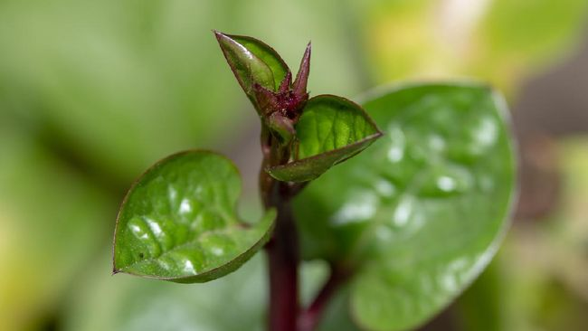

GAYA HIDUP

3 Daun untuk Kesehatan Mata: Cara Alami Jaga Fungsi Penglihatan
Menjaga kesehatan mata penting untuk menunjang kelancaran aktivitas sehari-hari. Berbagai masalah bisa menyerang organ vital ini, mulai dari iritasi ringan, rabun, hingga risiko kebutaan. Selain menggunakan obat medis, tahukah Anda bahwa ada beberapa daun untuk kesehatan mata yang dipercaya mampu membantu menjaga fungsi penglihatan?
Link untuk Berita selanjutnya